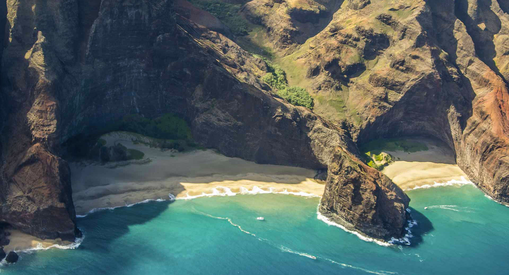
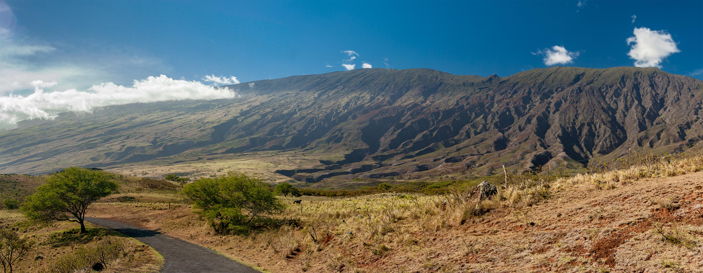

Hawaii
The state of Hawaii encompasses nearly the entire volcanic Hawaiian Island chain, which comprises hundreds of islands spread over 1,500 miles. At the southeastern end of the archipelago, the eight “main islands” are (from the northwest to southeast) Ni’ihau, Kaua’i, O’ahu, Moloka’i, Lāna’i, Kaho’olawe, Maui and the island of Hawai’i.
The last is the largest and is often called “The Big Island” to avoid confusion with the state as a whole. The archipelago is physiographically and ethnologically part of the Polynesian subregion of Oceania.

The Hawaiian islands were (and continue to be) continuously formed from volcanic activity initiated at an undersea magma source called a hotspot. As the tectonic plate beneath much of the Pacific Ocean moves to the northwest, the hot spot remains stationary, slowly creating new volcanoes. Due to the hotspot’s location, the only active volcanoes are located around the southern half of the Big Island. The newest volcano, Lō’ihi Seamount, is located south of the Big Island’s coast.
Hawaii’s tallest mountain, Mauna Kea, stands at 13,796 feet but is taller than Mount Everest if followed to the base of the mountain, which, lying at the floor of the Pacific Ocean, rises about 33,500 feet.
The eight main islands, Hawai’i, Maui, O’ahu, Kaho’olawe, Lana’i, Moloka’i, Kaua’i and Ni’ihau are accompanied by many others. Ka’ala is a small island near Ni’ihau that is often overlooked. The Northwest Hawaiian Islands are a series of nine small, older masses northwest of Kaua’i that extend from Nihoa to Kure that are remnants of once much larger volcanic mountains. There are also more than 100 small rocks and islets, such as Molokini, that are either volcanic, marine sedimentary or erosional in origin, totaling 130 or so across the archipelago.

Volcanic activity and subsequent erosion have created impressive geological features. The Big Island has the third highest point among the world’s islands. Slope instability of the volcanoes has generated damaging earthquakes with related tsunamis, particularly in 1868 and 1975. Steep cliffs have been caused by catastrophic debris avalanches on the submerged flanks of ocean island volcanos.
The last volcanic eruption outside the Big Island occurred at Haleakalā on Maui before the late 18th century, though it could have been hundreds of years earlier. In 1790, Kīlauea exploded with the deadliest eruption (of the modern era) known to have occurred in what is now the United States. As many as 5,405 warriors and their families marching on Kīlauea were killed by that eruption.
Text: Wikipedia
Photos: Dan Rodney